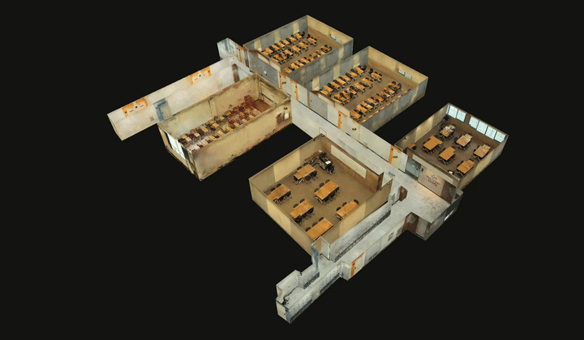
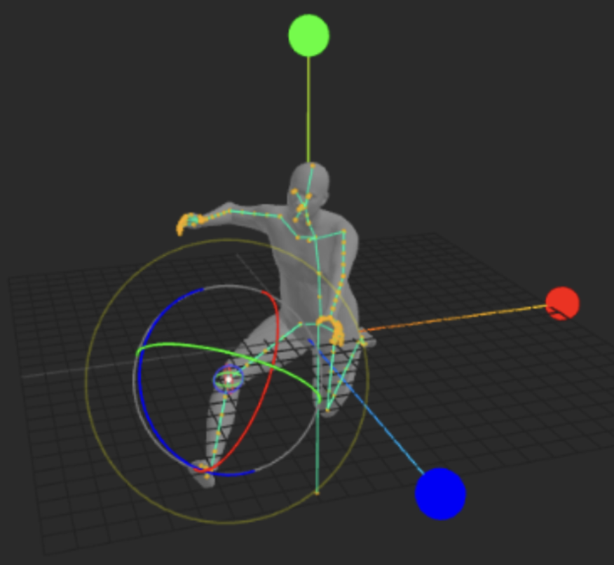
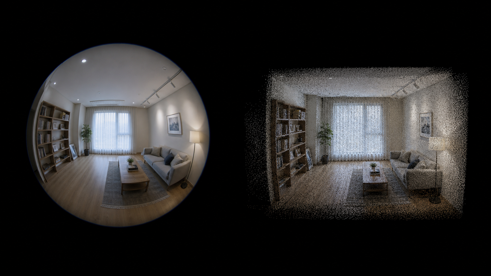
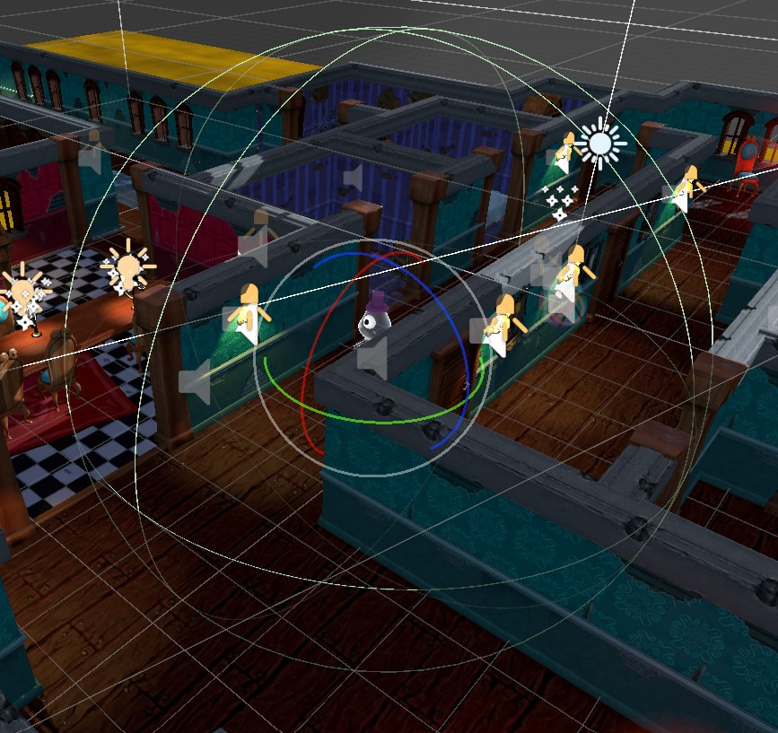

|
Kyumin Lee I am an undergraduate student in Computer Engineering at Sejong University, interested in computer graphics, 3D vision, and visual production technologies.
Research interests
GitHub / Study Notes / Email / LinkedIn |
Education
Sejong University, B.S. in Computer
Engineering, in progress
Additional Coursework
|
Language
TOEIC: 930 (Jul. 2025)
|
Experience
Sejong University Graphics Lab,
Undergraduate Researcher (Aug. 2024 - Present)
DiBLAT, Generative AI Video Production
Intern (Feb. 2025 - Jun. 2025)
|
AwardsGrand Prize, Creative Contest (창의경진대회 대상) (Jun. 2026) |
Research |
|
 |
Modular Indoor Digital Twins via Door-Based Alignment of 3D Gaussian Splatting Assets
Door-based alignment pipeline for assembling modular
indoor digital twins from 3D Gaussian Splatting assets.
|
|
 |
Character-Preserving Pose Refinement in Generative AI Image Generation Pipelines
ComfyUI-based pipeline for refining poses in
AI-generated character images by extracting 3D body pose
and editing joints as generation references.
|
Projects |
| Physics Based Simulation |
|
|
Position Based Dynamics
Cloth and deformable-body simulation with constraints, collision handling, and tearing. code |
|
Stable Fluid for Games
Interactive stable fluids implementation based on Jos Stam's real-time fluid simulation method. code |
|
Mass-Spring Cloth Simulation
Spring-mass cloth simulation with damping, drag, collision, friction, and restitution. code |
| 3D Reconstruction / Neural Rendering |
|
 |
3DGUT-Based 360 Gaussian Splatting with Depth and Normal Supervision
Customized gsplat-based preprocessing pipeline and 3DGUT trainer for raw distorted 360 camera captures, using COLMAP, hloc, and UniK3D with depth and normal priors. pipeline / trainer |
|
3D Gaussian Splatting Assets
Collection of reconstructed 3D Gaussian Splatting assets viewable in SuperSplat. assets |
| Rendering |
|
|
Ray Tracing
Fragment shader-based ray tracing with sphere primitives, reflections, and cube mapping. code |
|
OBJ File Reader
Interactive OBJ model loader and viewer with shading and lighting controls. code |
| Inverse Kinematics |
|
Robot Arm Inverse Kinematics
Robot arm inverse kinematics solver using iterative gradient descent. code |
| Image Processing |
|
Image Processing
Digital image processing implementations for transforms, filtering, compression, and histogram equalization. code |
| Game Development |
|
 |
Unity Game Development
Unity game development notes and implementation log. post |
|
|
Snake Game
Console snake game with object-oriented structure, score saving, and Windows-specific input handling. code |